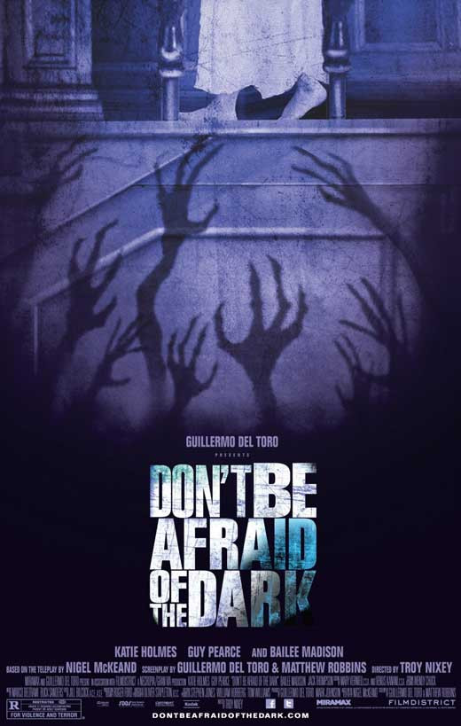
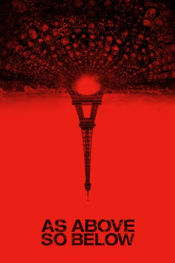

Lonely and introverted, young Sally (Bailee Madison) has just arrived at the 19th-century mansion that her father (Guy Pearce) and his girlfriend (Katie Holmes) are restoring. While exploring the sprawling estate, Sally discovers a hidden, long-undisturbed basement. Unwittingly, she unleashes a race of malevolent, dark-dwelling creatures who intend to drag her and her family down into the mansion's bottomless depths. A remake of the 1973 made-for-TV movie.

Archaeologist Scarlett Marlowe (Perdita Weeks) has devoted her whole life to finding one of history's greatest treasures: Flamel's Philosopher's Stone. According to legend, the artifact can grant eternal life and turn any metal into gold. When she learns that the stone is hidden underground in the Catacombs of Paris, she assembles a crew to guide and document her historic mission. As they begin their descent, the team-members have no way of knowing that they are entering their own personal hell.
The first theatrical JU-ON story became a landmark in the Asian horror genre, helping entice audiences from around the world to check out the continent’s terrifying fright films. Like the first two films (THE CURSE 1 & 2), THE GRUDGE revolves around a haunted house where a jealous man killed his wife and son, whose ghosts attack anyone who enters their home, spreading violence like an insidious virus. Structured in a completely different way than Western horror films, THE GRUDGE produces a deeply unsettling feeling in the viewer that lasts long after the credits roll.